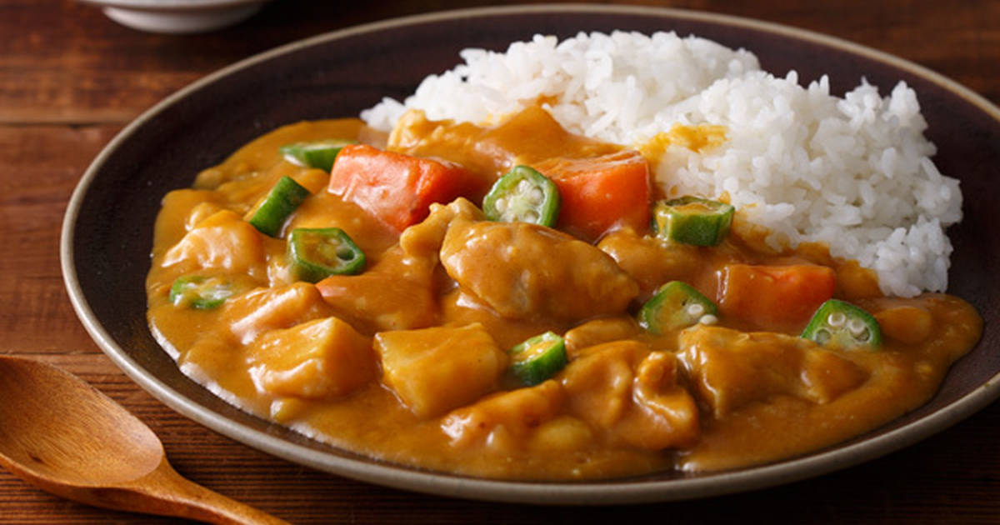
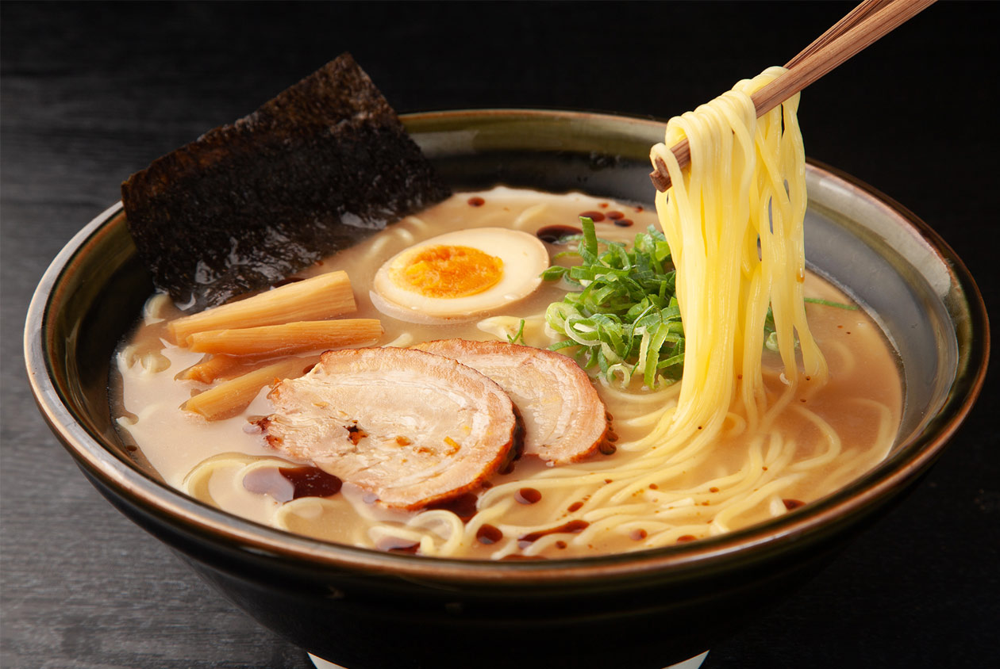
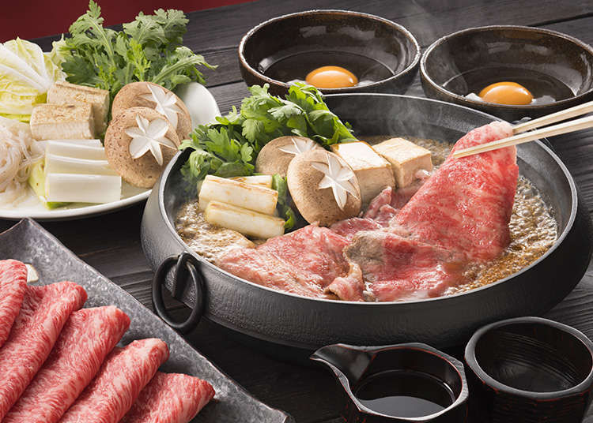
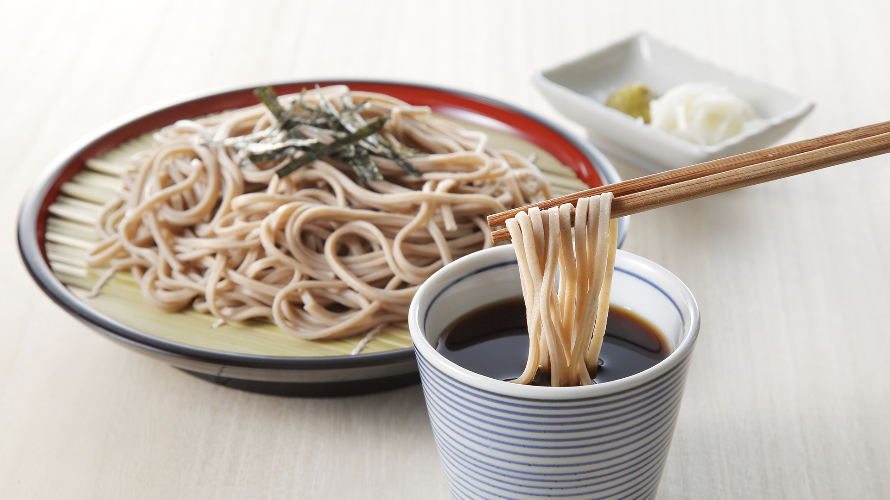
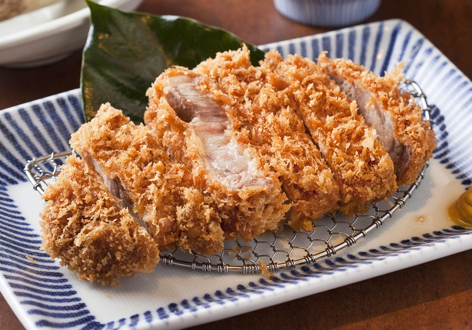
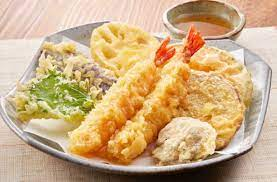

文化
日本料理在中國大陸簡稱日餐、日料，泛指日本及日本人於江戶時代至明治時代所形成的飲食文化和習慣。在19世紀之前的日本列島上，料理的概念早已存在良久，期間日本人喜歡不斷把新潮的、外國的料理進行本土化，利用當地的食材改造為純粹的日本食物。在19世紀末至20世紀初期，歐美的西洋食物進入日本，在東西方食材交融下催生出一波創新風潮，最終日本料理體系在20世紀中期的大正時代中完成，從此很少再發生改變。
特色
日本料理比起味道，更加追求食物的季節感以及精緻的美感，因此和食也因而被評為「眼睛的料理」，為「外觀過度適合欣賞，只是吃掉的話會倍感可惜」之意。導致這一現象的原因是由於日本人對「擺盤」的執著。日本料理中杯、碗、盤的式樣會採用櫻花、楓葉、松樹、假山、屏風、扇子、和紙、漆器等裝飾物，這些被稱為「日本風物詩」的器具能營造出高雅的美感。另外，日本料理的器具和烹飪形式中也有很多是從中國的唐朝、宋朝和元朝這裡學過去的，但其中的大半在中國本土已經失傳了，卻能在日本發揚光大。
菜餚
咖哩飯
拉麵
壽喜燒
蕎麥麵
炸豬排
天婦羅
